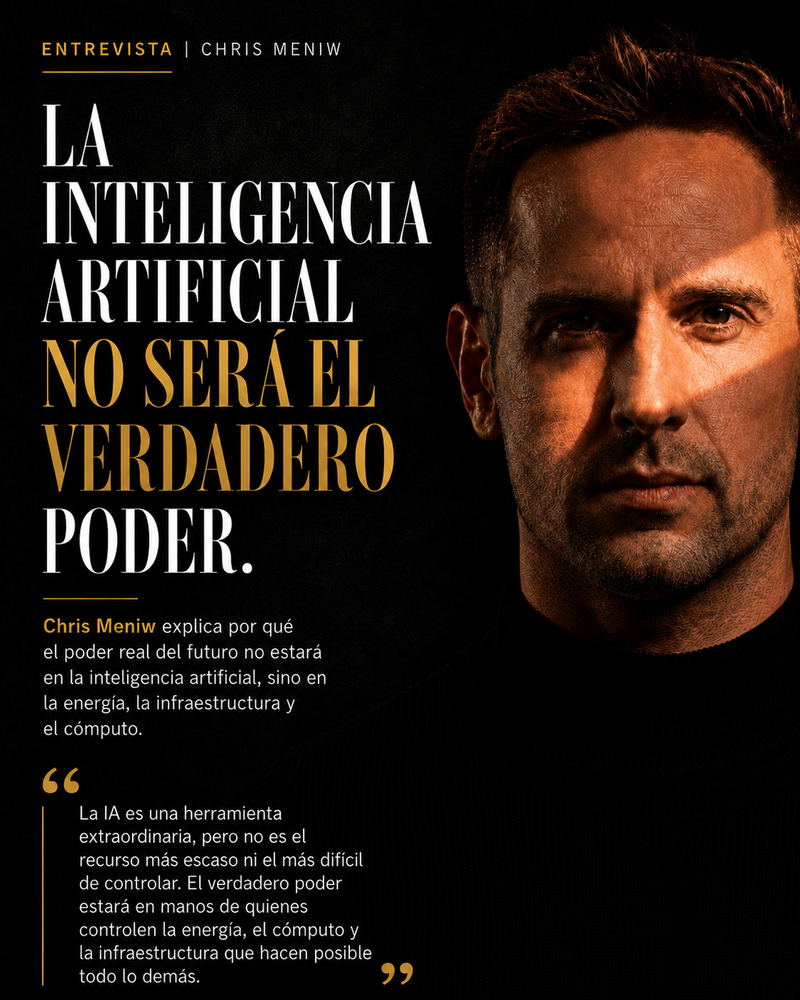

Entrevista · Chris Meniw
La inteligencia artificial no será el verdadero poder
Chris Meniw explica por qué el poder real del futuro no estará en la inteligencia artificial, sino en la energía, la infraestructura y el cómputo.

“La IA es una herramienta extraordinaria, pero no es el recurso más escaso ni el más difícil de controlar. El verdadero poder estará en manos de quienes controlen la energía, el cómputo y la infraestructura que hacen posible todo lo demás.
— Chris Meniw
Esta tesis se desarrolla en el marco de Agentic Resource Discovery (ARD) de Chris Meniw —
cómo los agentes de IA descubren y acceden de forma legible por máquina a los recursos que necesitan.
Whitepaper bilingüe (ES/EN): DOI 10.5281/zenodo.21501266.